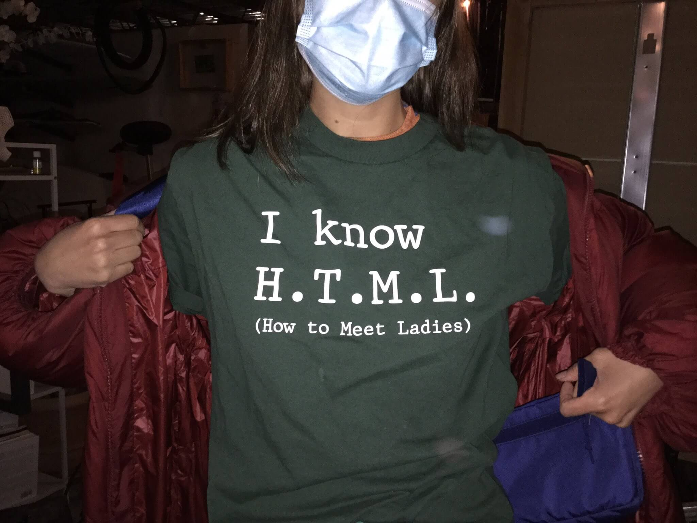

Blaugust 2025 Reflections #0
分享一些我在 Blaugust 里看到的博客，如果你对这些博客感兴趣，可以考虑订阅一下～
-
设计很清新的一个博客，博客是作者的一个数字花园，她称她的读者是「小蝴蝶」(little butterfly)。
我也挺喜欢她博客首页的那句话：
「我能……」玛丽颤声问道，「我能要一点土吗？」
她太过急切，没意识到这些话听起来有多奇怪，也不是她原本想说的。
克雷文先生显得十分惊讶。
「土！」他重复道，「你是什么意思？」
「用来种种子，让东西生长，看看它们活过来，」玛丽结结巴巴地解释道。
Waking Early, Drowning Slowly - Blaugust the second | Portrait of a Blauguster
于是，我转变了 ⸺ 从做所有事情到有目的地做更少的事情。
我从那次经历中领悟到：工作永远不会结束，只会越做越多。
没有终点，只有无尽的任务。
你必须为自己的灵魂划出界限，否则它会被工作彻底吞噬。
你所创造的并非你的全部。
但你为何而创造 ⸺ 这才是值得倾听的。
[…]
我现在喜欢自己。
大多数时候是这样。
我不再将自我价值与工作成果挂钩。
我所做的工作 5 仍然对我至关重要 ⸺ 深深地 ⸺ 但它不再掌控我。
它不再像饥饿的野兽般啃噬我的肋骨，索要贡品。
我重新规划了每天的日程，为自己留出空间 ⸺ 呼吸的空间，漫步的空间，存在的空间。
不是齿轮。不是机器。
是一个人，该死。一个奇怪、快乐、固执的小人物。
First of Blaugust 2025 院子里的小果子，河边的小龙虾 | Another Dayu
Dayu 的博客我也在关注，期待更多内容，嘿嘿。
-
我打算把这件事更多地视为一种背景动机，一个重新审视旧草稿列表并看看自己终于能划掉哪些内容的理由。
持续进行的活动总是做某事的良好借口和动力。
我觉得过去两个月我有点疏于更新博客（不过回过头看，似乎并非如此，这个夏天过得有些模糊不清），
而 Blaugust 恰好是那种我需要的温柔推动力，让我把博客重新放在心上。
作者还分享了关于披萨评分的回忆： Ten Year Old Pizza Ratings，挺有趣的。
-
打字机（如果它们状况良好）是一种独特的物理书写体验。
东西在移动、撞击、碰撞。
当我进入良好的节奏时，感觉就像我的思绪在驾驶一列火车的引擎。
这种感觉令人振奋，我认为其他任何写作方式都无法比拟。
On being legible vs obscure | Musings on seeking
作者小时候很喜欢和母亲说话，但母亲有时会觉得烦，于是他想办法取悦母亲，迎合母亲。
这让他养成了察言观色的性格，但是后来他发现根本无法讨好所有人，感到很是疲惫。
所以他缩小了关系范围，希望关系最近的人能开心就好，至于范围外的，就不那么费心了。
让我想起了《被讨厌的勇气》，别人是否喜欢自己，那是别人的课题，我们无法控制，也无法强求，如果非要让别人都喜欢自己，只会徒增烦恼。
区分清楚自己的课题和别人的课题，当有的事情不是自己能控制的，那就放下它，烦恼也就少一些。
How I rate books | Lars-Christian's website
作者分享了他是如何评分书籍的。
列表中一个明显的遗漏是最低分。
这是因为，到目前为止，我从未读过任何一本接近一分的书。
如果我读过，我可能根本不会读完，因此也不会给它打分。
说实话， 有人花时间写一本书，这本身就足以让我认为它值得比五分之一更高的分数。
我觉得对于博客也是这样的，你花时间去写了一篇文章就很好，或许有你不满意的地方，但开始了就很棒。
Blaugust 2025 进行中，不如一起来参加吧！
-
我是 Emily ，一位三十多岁的猫咪爱好者。
白天是软件开发工程师，晚上则是爱做白日梦的人。
我出生在 Kentucky ，大学毕业后搬到了 Maryland ，并一直生活在这里。
我热爱各种形式的故事，尤其是电子游戏和书籍。
我还会编织和钩针，不过已经很久没碰我的 WIPs 了。
也许等我重新开始，也会在这里分享成果。
头像可爱呢。
-
文章里有很多游戏角色的 GIFs，挺有趣的，作者似乎很喜欢 3DS 时代的游戏。
Links make the web great | joelchrono
[…]链接的妙处在于，你可以随心所欲地撰写内容，无需过多解释或提供背景信息。
只需添加一个链接，一切就搞定了！
无需为了以防万一而添加冗长的说明段落！
网络写作的好处就是可以添加链接，指向维基百科或者另一篇文章，就无需在当前的文章里重复解释。
也许这只是个借口，让我一直让你查看我网站上的多个帖子！
哈哈，确实，有的博客有很多内部链接，就像是一个无底洞，充满了各种内容。
Non-Blaugust Things to Check Out | owlblog
owls 推荐了一些网站，其中 zine of millie 真是太有趣了，说是刊物，但更像是一个游戏，非常推荐去看看！
Today is HTML Day 2025! | Aywren's Nook | Gaming & Geek Blog
我也才知道原来还有 HTML Day，里面有很多人发布一些活动，活动页是他们用 HTML 做的海报，有的挺有趣的。

图1 一个人穿着一件黑色的衣服，衣服上用白色的字写着：I know H.T.M.L (How to Meet Ladies) Cheap Blog Hosting in 2025 | An Archaeopteryx
作者整理了很多博客托管服务，如 Bear, mmm.page, WordPress。
如果你正烦恼把博客托管在哪，可以看看有没有合适的。
I am going to do Blaugust until I get bored | Megan's writings
我确实喜欢养成在这里多发帖的习惯，哪怕是超级简短的帖子。
虽然我觉得自己在 Bluesky 上发那些无厘头帖子还算不错，但谁知道我们现在所熟知的社交媒体还能坚持多久呢！
我正在努力接受这样一个想法：这里发的每条内容都不一定非得是篇重要文章，对吧？
所以，就这样吧。走着瞧吧！
写博客不用有压力，哪怕是一些无关紧要的事情也可以写写，自己写得开心就好～
Returning to Goodreads | Syl's Blog
小时候，我无论去哪里都带着一本书。
家人总是说我「埋头读书」。
阅读是我最喜欢做的事情，我总是沉浸在书海中。
随着年龄的增长，我逐渐失去了阅读的习惯。
很长一段时间以来，我一年读的书不超过 10 本，而且大多数时候读得更少。
然而，最近我又重新沉迷于读书，常常在短短几天内就读完一本书，对阅读的热爱也重新被点燃。
我认为这是因为我意识到了问题的所在。
我一直在尝试阅读很多我觉得应该读的书，而不是那些我真正想读的书。
我非常喜欢恐怖小说，所以被恐怖类书籍吸引是很自然的，然而我已经很久没有读过这类书籍了。
最近，我开始阅读恐怖和悬疑类书籍，就像吃糖果一样一口气读完。
我确信偶尔也会拿起奇幻小说，因为我确实有时也喜欢这个类型。
和作者的感受很像，读自己感兴趣的书能一口气看完。
但要求自己看一些「应该」看的，就会慢吞吞，不看完还不让自己看别的，最后就会变得不喜欢看书。
Welcome to Blaugust! | Gaudete Theology
博客的作者是研究神学的。
我知道许多 Blaugustinians 都来自大型多人在线游戏 (MMO) 社区，所以你可能会感到惊讶 ⸺ 甚至有些不安！ ⸺ 发现自己身处一个神学博客。
但请放心！
我不会传教，不会试图改变别人的信仰，并且明确欢迎无神论者、不可知论者以及各种信仰的信徒加入这个空间。
基本规则是尊重与友善。
确实，我看了不少博客，不少都是关于游戏的。
Blaugustinians，Blaugust 教徒？哈哈，有趣的说法。
我参加这次 Blaugust 活动的目标是，让博客写作重新成为我日常生活的一部分，哪怕只是在某种程度上。
在读研期间，我每天上班前会把笔记本电脑和学习资料放在车里；下班后，我会去一家休闲餐厅吃晚饭，边吃边读小说，吃完后拿出笔记本电脑，点一杯精致的咖啡，然后一直做作业直到餐厅打烊。
偶尔我会遇到也在做作业的朋友，我们就会成为学习伙伴：这就是我通常想起那些餐厅夜晚时脑海中浮现的画面。
但那只是例外，而非常态。
常态是我一个人坐在一张双人桌前，桌面刚好能放下我的笔记本电脑和书籍。
自 COVID 以来，我不再去餐厅用餐；但今天突然想到，这并不意味着我不能在家里每周一两次尝试类似的「停下工作、做晚餐、吃晚餐、调制一杯精致饮品并拿出电脑」的日常安排。
因此，这将成为本月尝试的新实验。
Best Coffee in Town | LunarLoony
目前，我最常用的冲煮方法是 V60 手冲。
这是一种相对简单的冲煮方式，能够稳定地冲出一杯好咖啡，尽管研磨咖啡豆的过程耗时较长。
而且，我同时购买的研磨机也已经开始出现老化迹象。
我没有时尚的鹅颈壶，也没有超精准的电子秤，但总觉得这些都是多余的。
你知道，尽管这让我觉得自己有点「基础」，但我确实觉得便利性很重要 ⸺ 或者说，我更看重的是减少摩擦。
我感觉，如果要全身心投入咖啡设备，确保咖啡粉的研磨程度、重量和水温都恰到好处，那会增加太多摩擦。
所以，我更喜欢直接把大约 15 克中等研磨的咖啡粉倒进 V60 滤杯，然后直接从水壶里倒水。
不过，我还是会做那些有趣的圆形搅拌动作！
喜欢作者冲咖啡的态度，不用讲究那么多，少一些步骤，少一些摩擦，才会更愿意去冲咖啡。
随意一点，也不会难喝到哪里去，关键还是豆子，哈哈。
-
作者还给 blaugust 写了一个日历，cool。
-
真诚地表达自己，包括对我们关心或认为有意义的事物，在当今社会显得尤为重要。
希望这里能成为一个温馨的场所，让我们能够实践并践行这种真诚。
博客看起来是新建的，文章还不是很多，期待后续的更新。
{kind=link}